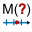

Es posible de medir la abscisa de un punto sobre una recta relativa a dos puntos con el icono

.Esta abscisa sólo existirá si los puntos están alineados.
Para medir la abscisa de M relativa al referencial (A; B):
Los tres puntos deben nombrarse.
Si no se nombran lo harán automáticamente luego de la medida.
MathGraph32 solicitará un para esta medida.